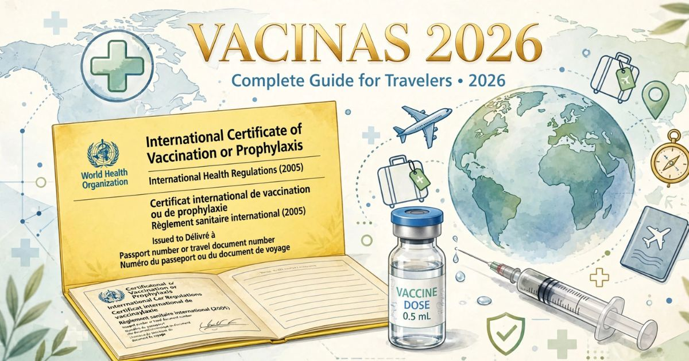

Vacinas para viajantes 2026: guia completo e obrigatórias por destino
Introdução: saúde em primeiro lugar
Viajar para o exterior é uma experiência transformadora, mas também envolve cuidados importantes com a saúde. Um dos aspectos mais negligenciados pelos viajantes brasileiros é a vacinação antes da viagem. Muitas pessoas só se lembram de verificar as vacinas quando já estão com as malas prontas — ou pior, quando chegam ao destino e descobrem que precisam de um comprovante de vacinação para entrar no país.
Em 2026, a preocupação com a saúde em viagens ganhou ainda mais relevância após a pandemia de COVID-19. Países de todo o mundo reforçaram suas exigências sanitárias, e a vacinação se tornou um requisito indispensável para viajar com segurança e tranquilidade. Além disso, doenças como febre amarela, hepatite A, tifo e malária ainda representam riscos significativos em diversas regiões do planeta.
Neste guia completo sobre vacinas para viajantes, você vai descobrir tudo o que precisa saber antes de embarcar: quais vacinas são obrigatórias, quais são recomendadas, como obter a Carteirinha Internacional de Vacinação (CIVP), quais são as exigências por destino e onde se vacinar no Brasil.
Nosso objetivo é garantir que sua viagem seja não apenas incrível, mas também segura. Afinal, a melhor lembrança de uma viagem é a saudade — e não uma doença contraída no exterior.
Por que é importante se vacinar antes de viajar
A vacinação antes de viagens internacionais não é apenas uma recomendação médica — é uma medida de segurança essencial para proteger sua saúde e a saúde das pessoas ao seu redor.
Proteção individual — Em muitos países, doenças que já estão controladas no Brasil ainda são endêmicas ou epidêmicas. A vacinação oferece proteção contra essas doenças, reduzindo o risco de infecção e complicações graves.
Obrigatoriedade em alguns destinos — Diversos países exigem comprovante de vacinação para permitir a entrada. A febre amarela, por exemplo, é obrigatória para viajantes que chegam de áreas de risco. Sem o comprovante, você pode ter a entrada negada.
Proteção da comunidade — Ao se vacinar, você também protege outras pessoas, especialmente aquelas que não podem ser vacinadas por razões médicas (como bebês, gestantes e imunossuprimidos).
Prevenção de surtos — Viajantes podem levar doenças de um país para outro, contribuindo para surtos em regiões que não têm imunidade contra determinadas enfermidades.
Tranquilidade durante a viagem — Saber que você está protegido contra doenças graves permite que você aproveite sua viagem com muito mais tranquilidade e menos preocupações.

A Carteirinha Internacional de Vacinação é o documento obrigatório em diversos destinos
Carteirinha Internacional de Vacinação (CIVP)
A Carteirinha Internacional de Vacinação (CIVP), também conhecida como "Certificado Internacional de Vacinação ou Profilaxia" (CIVP), é o documento oficial que comprova que você tomou as vacinas exigidas para viagens internacionais.
O que é a CIVP? — É um documento padronizado pela Organização Mundial da Saúde (OMS), reconhecido internacionalmente, que registra as vacinas que você recebeu. Ele é exigido por diversos países para comprovar a vacinação contra febre amarela, COVID-19 e outras doenças.
Como obter a CIVP?
- O documento é emitido pela ANVISA (Agência Nacional de Vigilância Sanitária) no Brasil.
- Você pode solicitar a CIVP em postos de vacinação credenciados, em aeroportos internacionais ou em unidades da ANVISA.
- Para solicitar, é necessário apresentar o comprovante de vacinação e um documento de identificação.
- O documento pode ser emitido digitalmente ou em papel.
Quando a CIVP é obrigatória?
- Para entrar em países que exigem comprovante de vacinação contra febre amarela, como: Austrália, Colômbia, Costa Rica, Cuba, Filipinas, Guiné-Bissau, Malásia, Panamá, Porto Rico, República Dominicana, Trinidad e Tobago, entre outros.
- Para viajantes que vêm de áreas de risco de febre amarela (como o Brasil) e se dirigem a países que exigem o certificado.
- Durante surtos de doenças como a COVID-19, alguns países podem exigir a CIVP com registro da vacinação.
Dica: Mesmo que o país de destino não exija a CIVP, é recomendável ter o documento. Ele pode ser solicitado em situações de emergência ou em conexões em países que exigem o comprovante.
Febre Amarela: a vacina mais importante para viajantes
A febre amarela é uma doença viral transmitida por mosquitos, comum em regiões tropicais da América do Sul e da África. No Brasil, a doença ainda é endêmica em várias regiões, e a vacina é a principal forma de prevenção.
Como funciona a vacina? — A vacina contra febre amarela é extremamente eficaz, com mais de 95% de proteção após 10 dias da aplicação. A imunidade é duradoura, e uma dose única é suficiente para a vida toda, conforme a OMS.
Quem deve se vacinar?
- Viajantes que se dirigem a áreas de risco de febre amarela no Brasil e no exterior.
- Pessoas que residem em áreas endêmicas.
- Pessoas que planejam viajar para países que exigem o comprovante de vacinação.
Contraindicações:
- Crianças com menos de 9 meses.
- Gestantes (exceto em situações de alto risco).
- Pessoas com imunossupressão grave.
- Pessoas com alergia grave a ovos (a vacina é produzida em ovos embrionados).
Países que exigem comprovante de vacinação contra febre amarela:
- América do Sul: Colômbia, Guiana, Panamá, Suriname, Trinidad e Tobago, Venezuela.
- América Central e Caribe: Costa Rica, Cuba, El Salvador, Guatemala, Honduras, Nicarágua, Panamá, Porto Rico, República Dominicana.
- África: Angola, Benim, Burkina Faso, Camarões, Congo, Costa do Marfim, Gabão, Gana, Guiné, Libéria, Mali, Nigéria, República Democrática do Congo, Senegal, Togo.
- Ásia: Malásia (Borneo), Tailândia (algumas regiões).
Onde tomar? — A vacina contra febre amarela é oferecida gratuitamente pelo SUS em postos de saúde em todo o Brasil. Também é possível tomar em clínicas particulares de vacinação, com custo variando entre R$ 150 e R$ 300.
COVID-19: o que mudou para viajantes em 2026
Com o avanço da vacinação global e o fim da pandemia, muitos países relaxaram as restrições para viajantes. No entanto, a COVID-19 ainda é uma preocupação, e a vacinação continua sendo recomendada para todos os viajantes.
Exigências atuais:
- A maioria dos países não exige mais comprovante de vacinação contra COVID-19 para entrada.
- Alguns países (especialmente na Ásia) ainda pedem comprovante de vacinação ou teste negativo.
- Verifique as exigências específicas do país de destino antes da viagem.
Vacinas recomendadas:
- O esquema vacinal completo (2 doses) contra COVID-19 é recomendado para todos os viajantes.
- As doses de reforço também são recomendadas, especialmente para viajantes com mais de 60 anos ou com condições de saúde pré-existentes.
- As vacinas aprovadas pela ANVISA e pela OMS são aceitas internacionalmente.
Documentos:
- O comprovante de vacinação contra COVID-19 pode ser obtido pelo aplicativo Conecte SUS ou pela Carteirinha Internacional de Vacinação.
- Alguns países aceitam o comprovante digital, enquanto outros exigem o documento em papel.
Outras vacinas recomendadas para viajantes
Além da febre amarela e da COVID-19, existem outras vacinas que são altamente recomendadas para viajantes, dependendo do destino e do tipo de viagem.
Hepatite A — Recomendada para todos os viajantes que se dirigem a países com baixos níveis de saneamento básico e higiene. A hepatite A é uma doença viral que afeta o fígado e é transmitida por água e alimentos contaminados. A vacina é altamente eficaz e oferece proteção por 10 a 20 anos.
Hepatite B — Recomendada para viajantes que planejam contato íntimo com a população local, procedimentos médicos ou atividades de risco (como tatuagens e piercing). A hepatite B é transmitida por sangue e fluidos corporais.
Tifo (febre tifoide) — Recomendada para viajantes que se dirigem a países com baixos níveis de saneamento, especialmente no Sul e Sudeste Asiático, África e América Latina. O tifo é transmitido por água e alimentos contaminados.
Raiva — Recomendada para viajantes que terão contato com animais (como voluntários em santuários de animais, veterinários) ou que viajam para áreas rurais onde a raiva é comum. A vacina pode ser administrada antes ou após a exposição ao vírus.
Meningite meningocócica — Recomendada para viajantes que se dirigem a áreas com surtos de meningite, especialmente na África Subsariana (o chamado "cinturão da meningite").
Febre tifoide — Recomendada para viajantes que planejam visitar áreas rurais ou consumir alimentos em condições precárias de higiene.
Difteria, Tétano e Coqueluche (DTP) — A vacina DTP deve estar em dia para todos os viajantes, independentemente do destino. O tétano é uma preocupação em áreas rurais e em casos de ferimentos.
Sarampo, Caxumba e Rubéola (Tríplice Viral) — A vacina tríplice viral deve estar em dia para todos os viajantes. O sarampo ainda é uma preocupação em muitas regiões do mundo.
Vacinas obrigatórias e recomendadas por destino
As exigências de vacinas variam conforme o destino. Confira uma tabela com as principais recomendações para os destinos mais procurados por brasileiros:
| Destino | Vacinas obrigatórias | Vacinas recomendadas |
|---|---|---|
| Estados Unidos | COVID-19 (alguns estados) | Febre Amarela, Hepatite A, Hepatite B, Tríplice Viral |
| Europa (Schengen) | Nenhuma obrigatória | Febre Amarela, Hepatite A, Hepatite B, Tríplice Viral |
| Argentina | Nenhuma obrigatória | Febre Amarela, Hepatite A, Febre Tifoide |
| Colômbia | Febre Amarela | Hepatite A, Hepatite B, Tifo, Tríplice Viral |
| Peru | Febre Amarela (áreas de risco) | Hepatite A, Hepatite B, Tifo, Raiva |
| Tailândia | Nenhuma obrigatória | Febre Amarela, Hepatite A, Hepatite B, Tifo, Raiva, Tríplice Viral |
| Japão | Nenhuma obrigatória | Febre Amarela, Hepatite A, Hepatite B, Tríplice Viral |
| África do Sul | Febre Amarela (se de área de risco) | Hepatite A, Hepatite B, Tifo, Raiva, Tríplice Viral |
| Emirados Árabes (Dubai) | Nenhuma obrigatória | Febre Amarela, Hepatite A, Hepatite B, Tríplice Viral |
Antes de viajar, sempre verifique as exigências atualizadas do país de destino no site do Ministério das Relações Exteriores ou no site da ANVISA.
Onde se vacinar para viajar
No Brasil, existem diversas opções para se vacinar antes de uma viagem internacional. A escolha entre o serviço público e o privado depende das suas necessidades e do tempo disponível.
Postos de saúde (SUS):
- Oferecem vacinas gratuitamente, incluindo febre amarela, COVID-19, hepatite A, hepatite B, tríplice viral e DTP.
- Emitem a Carteirinha Internacional de Vacinação (CIVP) gratuitamente.
- Atendimento por ordem de chegada, sem necessidade de agendamento.
Clínicas particulares de vacinação:
- Oferecem todas as vacinas disponíveis no mercado, incluindo vacinas de viagem mais específicas.
- Atendimento com agendamento e maior comodidade.
- Valores variam de R$ 100 a R$ 500 por vacina.
- Emitem a CIVP mediante cobrança de taxa.
Postos de vacinação em aeroportos internacionais:
- Presentes nos principais aeroportos do Brasil (Guarulhos, Viracopos, Galeão, etc.).
- Funcionam para emissão da CIVP e vacinação de última hora.
- Ideal para quem não conseguiu se vacinar antes da viagem.
- Geralmente têm custo para emissão da CIVP.
Dicas importantes sobre vacinação para viagens
Para garantir que sua vacinação esteja em dia e você não tenha problemas durante a viagem, siga estas dicas:
- Planeje com antecedência — Muitas vacinas exigem mais de uma dose e levam semanas para fazer efeito. Comece o processo de vacinação com pelo menos 4 a 6 semanas de antecedência da viagem.
- Consulte um médico especialista — Busque orientação em clínicas de medicina do viajante ou no posto de saúde mais próximo. O médico indicará as vacinas necessárias para o seu destino e perfil.
- Mantenha a CIVP atualizada — Guarde a CIVP em local seguro e leve-a com você durante a viagem. Alguns países pedem o documento na imigração.
- Leve cópias da CIVP — Tenha uma cópia física e digital (foto) da CIVP no celular. Em caso de perda, você terá uma versão de backup.
- Verifique as exigências do país de destino — As exigências mudam frequentemente. Consulte o site da ANVISA ou do Ministério das Relações Exteriores antes da viagem.
- Não se esqueça das vacinas de rotina — Além das vacinas de viagem, verifique se suas vacinas de rotina (DTP, Tríplice Viral, etc.) estão em dia.
- Para viagens em grupo — Se você viaja com família ou grupo, verifique as vacinas de todos os integrantes, incluindo crianças.
A vacinação é um dos cuidados mais importantes que você pode ter antes de viajar. Não deixe para a última hora! Além de proteger sua saúde, a vacinação pode evitar que você tenha a entrada negada em países que exigem comprovantes. E lembre-se: a Carteirinha Internacional de Vacinação (CIVP) é o documento que comprova sua vacinação — guarde-a com cuidado durante toda a viagem!
❓ Perguntas Frequentes sobre vacinas para viajantes
A única vacina obrigatória para viajantes internacionais é a de febre amarela, para quem viaja para países que exigem comprovante. Alguns países também exigem comprovante de vacinação contra COVID-19. As demais vacinas são recomendadas, mas não obrigatórias.
A CIVP pode ser obtida em postos de vacinação credenciados pela ANVISA, em aeroportos internacionais ou em unidades da ANVISA. É necessário apresentar o comprovante de vacinação e um documento de identificação. O documento pode ser emitido digitalmente ou em papel.
Não. A vacina contra febre amarela não é obrigatória para entrar na Europa. No entanto, se você vem de uma área de risco (como o Brasil), alguns países podem solicitar o comprovante de vacinação na imigração. Recomenda-se ter a CIVP mesmo que o destino não a exija.
O ideal é iniciar o processo de vacinação com 4 a 6 semanas de antecedência. Algumas vacinas (como a de febre amarela) precisam de 10 dias para fazer efeito, enquanto outras exigem múltiplas doses com intervalos específicos.
Sim. A vacina contra febre amarela, COVID-19, hepatite A, hepatite B, tríplice viral e DTP são oferecidas gratuitamente pelo SUS em postos de saúde em todo o Brasil. Vacinas específicas para viagens (como tifo, raiva) podem ser encontradas em clínicas particulares.
Em geral, a vacina contra febre amarela é contraindicada para gestantes, exceto em situações de alto risco de exposição à doença. Nesses casos, é necessário avaliação médica criteriosa. O mesmo se aplica a mulheres que planejam engravidar nos 30 dias após a vacinação.
Em caso de perda da CIVP, você pode solicitar uma segunda via no posto de vacinação onde tomou a vacina. Se estiver no exterior, procure o consulado brasileiro mais próximo para orientações. A segunda via pode ser emitida mediante apresentação de documento de identificação.
Sim. Crianças precisam estar com o calendário vacinal em dia para viajar. A vacina contra febre amarela é recomendada a partir dos 9 meses de idade (em áreas de risco) e contraindicada para bebês menores de 6 meses. Consulte um pediatra antes da viagem.
Consulte o site da ANVISA (saude.gov.br) ou do Ministério das Relações Exteriores (gov.br/mre) para informações atualizadas sobre exigências de vacinação por país. As informações também estão disponíveis no site da OMS (who.int) e em clínicas de medicina do viajante.